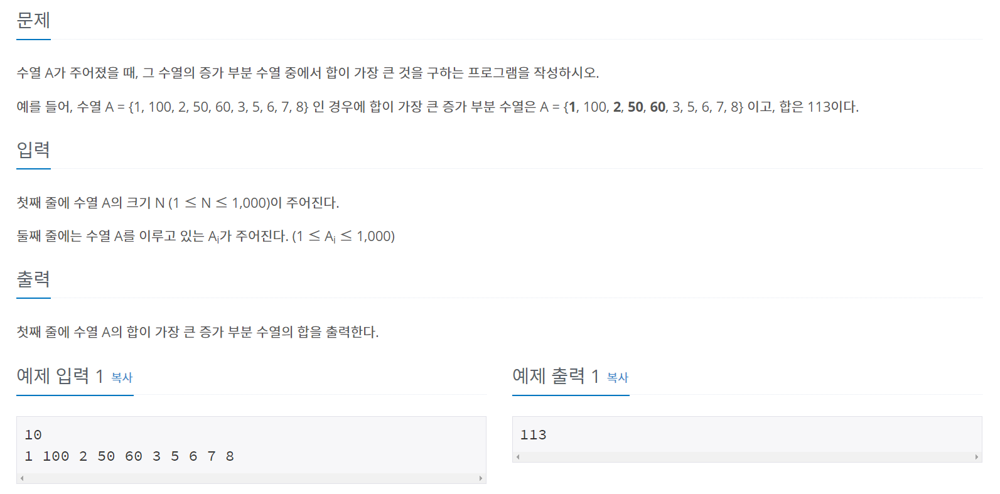
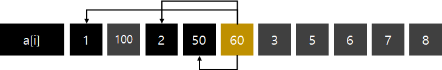
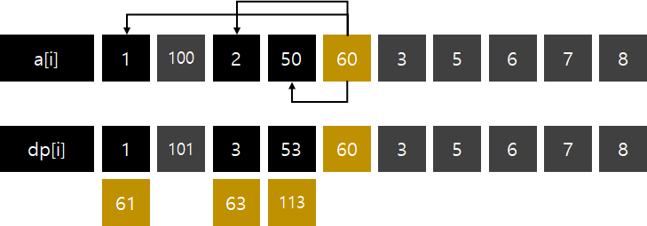
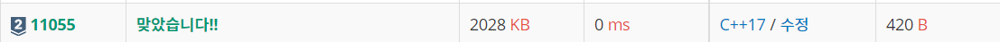

#INFO
난이도 : SILVER2
알고리즘 유형 : DP(다이나믹 프로그래밍)
문제출처 : https://www.acmicpc.net/problem/11055

#SOLVE
수열의 원소를 입력받아 저장할 a[1001] 과, 최댓값을 저장할 배열 dp[1001]를 선언한다.
여기서 dp[n] 은 n 으로 끝나는 합이 가장 큰 증가하는 부분 수열 이라는 의미이다.
우리가 원하는 위치의 인덱스의 dp값을 구하기 위해서는 0번 인덱스 부터 해당 인덱스 까지 반복문을 돌려서 비교를 해 주어야 한다.
for (int i = 0 ; i < n ; ++i) {
dp[i] = a[i];
for (int j = 0 ; j <= i ; ++j) {
...
}
}
}... 안에 들어갈 조건은 2가지이다. 일단 증가하는 부분 수열 이라는 조건을 만족 해야 하기에, a[j] < a[i] 이어야 한다.

다음으로 dp[i]가 dp[j] + a[i] 보다 작은 경우 dp[i] 를 dp[j] + a[i] 로 초기화 시켜 주어야 한다.
60을 예시로 들어 보면 60의 값은 60 + 1 .. 60 + 3 .. 60 + 53 으로 바뀐다.

위의 2가지 조건을 추가한 코드는 다음과 같다.
for (int i = 0 ; i < n ; ++i) {
dp[i] = a[i];
for (int j = 0 ; j <= i ; ++j) {
if ((a[j] < a[i]) && (dp[i] < dp[j] + a[i])) {
dp[i] = dp[j] + a[i];
}
}
}#CODE
#include <iostream>
#include <algorithm>
using namespace std;
int a[1001];
int dp[1001];
int main() {
int n;
cin >> n;
for (int i = 0 ; i < n ; ++i) {
cin >> a[i];
}
for (int i = 0 ; i < n ; ++i) {
dp[i] = a[i];
for (int j = 0 ; j <= i ; ++j) {
if ((a[j] < a[i]) && (dp[i] < dp[j] + a[i])) {
dp[i] = dp[j] + a[i];
}
}
}
cout << *max_element(dp, dp + sizeof(dp)/sizeof(int));
return 0;
}